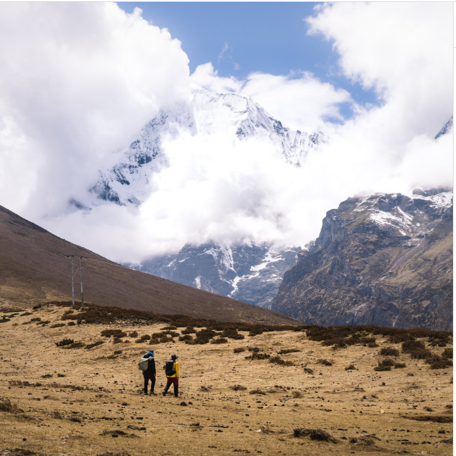

◈ Vignette Series
Chapters in this Vignette

◈ Chapter 1Origin & Legend
The Legend of the Treasure Lake
The oral histories that name Tshonapata a sacred treasure lake — stories of hidden wealth, guardian spirits, and the ancient pact between community and water.
Insert Photo
◈ Chapter 2
Cosmology & Belief
Guardians of the Water
The spiritual ecology of Tshonapata — the lu (water spirits), the seasonal rituals of appeasement, and why the lake remains protected from development.
Insert Photo
◈ Chapter 3
Community & Stewardship
The Communities of Sephu
Meeting the herding and farming communities of Sephu whose livelihoods, rituals, and identity are deeply intertwined with the lake and its watershed.
Insert Photo
◈ Chapter 4
Change & Continuity
The Lake in a Changing Climate
How the communities of Sephu are witnessing and responding to visible changes in Tshonapata — glacial retreat, shifting seasons, and the resilience of sacred knowledge.